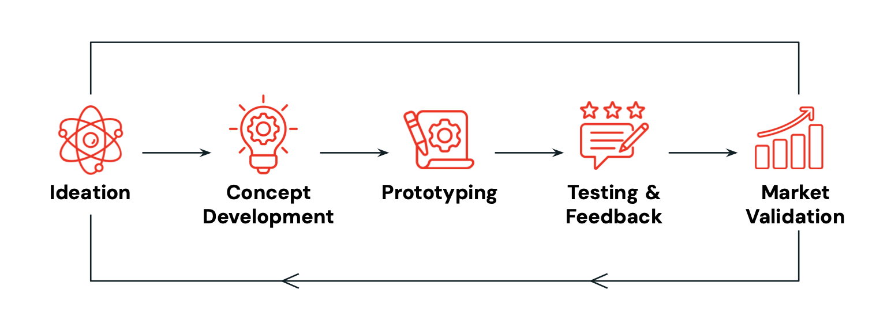
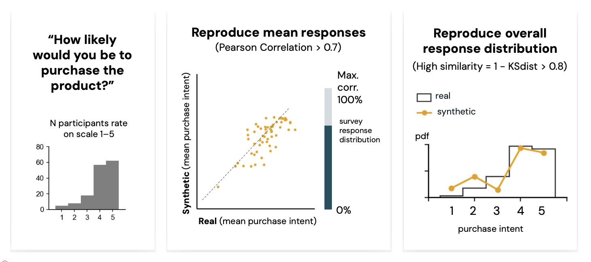
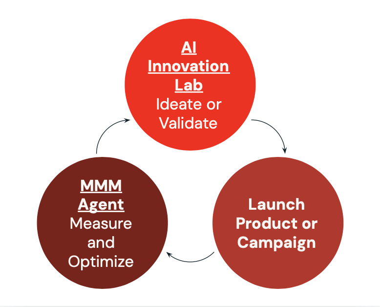

At PyMC Labs, we’re tackling a core problem in the CPG industry: product innovation is too slow, fragmented, and disconnected from real consumer needs.
The AI Innovation Lab is an end-to-end platform that uses AI-powered synthetic consumers and expert agent collaboration to streamline every stage of product development — from smarter concept briefs and design iteration to pricing simulation and market validation.
Validated through custom metrics and real-world benchmarks, our U.S. panel replicates up to 90% of consumer behavior patterns. And we’re just getting started — this is the foundation of a broader vision: where virtual consumer panel insights can be used to evaluate product characteristics, pricing and even marketing creatives and branding providing quantitative assessments that can be fed as priors in Bayesian models such as Media Mix Models.
Across the CPG industry, product innovation is falling behind. It’s too slow, too fragmented, and too costly — and too often, it’s disconnected from what real consumers actually want.
In response, a growing number of startups and industry leaders have turned to synthetic consumers: AI-generated personas built to mirror real-world behaviors, preferences, and decision patterns. The promise? Faster, cheaper feedback — without the delays and limitations of traditional market research.
But at PyMC Labs, we asked a harder question: What would it take to not just accelerate product development, but fundamentally rethink it — combining agentic workflows, multimodal vision models, and validated insights grounded in our expertise in data-driven simulations?
With one of our major clients in the CPG space, we have developed the AI Innovation Lab — a new way to turn ideas into market-ready products.
Despite billions invested in research, design, and marketing, product innovation in CPG remains flawed. Across every stage, teams face systemic barriers that make it hard to build products real consumers actually want.
Feedback loops are stuck in silos: In traditional product innovation workflow, each team operates in sequence: product writes the brief, R&D formulates, marketing positions, and research validates — often weeks or even months later. This rigid, siloed process leaves little room for iteration or collaboration. Once decisions are made, they’re hard to reverse, and by the time feedback arrives, it rarely changes the outcome.
Design is treated as a downstream detail: Visual identity — from packaging to typography to color palette — is often finalized after core product decisions have already been made. By then, there’s little time, budget, or flexibility left to test whether the design actually resonates with consumers. Yet in categories like skincare, beverages, and personal care, packaging is not just a wrapper — it’s the first interaction, the first impression, and often the deciding factor. Despite this, most teams have no structured way to evaluate how visual choices influence perception, relevance, or shelf appeal.
Pricing relies on guesswork: In most workflows, pricing decisions come late, based on loose benchmarks. It's rarely tested or modeled early, even though price directly shapes demand, positioning, and market size. Without a way to simulate price elasticity up front, teams risk launching too high, too low — or simply off the mark.
The result? A process that’s resistant to change, and misaligned with the consumers it’s meant to serve. Fixing it requires more than speeding things up — it demands rethinking how products are imagined, evaluated, and brought to life.
Our solution is designed to bring clarity and confidence to every strategic Product Development choice. From early ideation to go-to-market, it provides data-driven ideation and consumer insights that are both quantitative and actionable. The tools enhances:
Brainstorming: Quickly explore hundreds of concept directions, grounded in trend data and internal insights. Get to better ideas, faster — with agent-led briefs and early feasibility checks that surface what’s worth pursuing.
Product Refinement: Test pricing and forecast market potential before launch. Understand how price, positioning, and packaging impact demand — and align confidently on go-to-market strategy.

The AI Innovation Lab is not just a tool — it’s an end-to-end platform to dramatically speed up the product development lifecycle, from initial idea to market validation. The platform includes five main capabilities that streamline and accelerate every stage of product development:
Smarter Product Briefs: The Lab generates product briefs informed by trend data, competitive analysis, and your own historical product performance — giving teams a clear, evidence-based foundation from day one.
AI Expert Evaluation: Each product brief is reviewed by a panel of AI agents simulating expert perspectives — covering feasibility, formulation constraints, regulatory risks, and strategic fit. Based on the review, the agents suggest targeted improvements, enabling teams to refine concepts early.
Design refinement: Product visuals are iterated using advanced multimodal models. Teams can explore and refine images, colors, typography, and claims — making design an integral part of the development process, not an afterthought.
Synthetic Consumer Testing: Access feedback in minutes, not weeks. The platform taps into synthetic consumer panels built to reflect real-world demographics and behavioral patterns — allowing rapid testing of uniqueness, appeal, relevance and purchasing consideration.
Market Simulation: Forecast market impact before launch. Tools for price sensitivity analysis, market sizing, and competitive dynamics help teams make data-driven decisions about positioning, pricing, and portfolio strategy.
Together, these capabilities form a unified system that helps teams move from idea to market with greater speed, precision, and confidence.

You might ask: this all sounds promising — but how do I know it really works in practice?
That's why we've validated our platform through real-world testing:
| Challenge | Solution |
|---|---|
| Ideating Realistic Product Concepts | Multiagent Expert Collaboration Leveraging our expertise in building multi-agent systems (such as our MMM Insight Agent), we've developed a dynamic, domain-aware agent collaboration framework for product ideation. This solution enables seamless interactions between AI roles—product designer, marketing strategist, and sustainability expert—using self-feedback loops to efficiently generate realistic products with minimal user input. |
| Reproducing Human Feedback | Advanced Prompt Engineering We developed an innovative prompting method that involves asking synthetic consumers exclusively open-ended questions. We then convert these qualitative responses into standardized quantitative metrics using embeddings. This allows the LLM to allocate more test time compute to answering the questions, resulting in smoother and more realistic response distributions. This case study, highlighting how LLMs handle open-ended questions, provides insight into our method’s practical effectiveness. |
| Evaluating Synthetic Consumer Quality | We conducted a large-scale replication study with a major international CPG brand, assessing synthetic consumer panels across hundreds of products and thousands of real consumer responses. Our evaluation focused on two key metrics: Response Correlation: Using Pearson correlation, we measured how closely synthetic consumers matched real consumers in product rankings—often sufficient for early-stage concept testing and directional insights. Distribution Similarity: Employing the Kolmogorov–Smirnov (KS) test, we compared full response distributions of synthetic versus real consumers, uncovering variations that averages alone might overlook. Within the oral-care category, our synthetic panel successfully replicated up to 90% of real consumer responses when asked about purchase intent. |
| Developing a General-Purpose Synthetic Panel | Harnessing Large-Scale Public Datasets We’ve created representative synthetic panels for major markets by modeling target demographics based on publicly available datasets such as ANES and GSS. Validation against real-world benchmarks, including voting behavior and TV preferences in the US demonstrates strong performance, providing initial evidence that this general purpose panel can effectively support diverse advertisers and brands. |
Not every challenge is yet fully solved — and that’s exactly the point. We’re building forward, with real progress, tested methods, and a clear path toward even more robust, reliable product decision-making.
At PyMC Labs, we’re extending the AI Innovation Lab in two key directions:
Creative Testing – expanding the Lab’s capabilities to evaluate ads and campaign assets early in the development cycle.
Marketing Integration – linking it with our MMM Insight Agent, built on top of the PyMC-Marketing toolbox, to optimize media spend with precision and transparency.
Together, these systems form a unified, iterative workflow:
What should we launch?
The AI Innovation Lab supports product and creative development — testing concepts, messaging, and packaging with synthetic consumers.
How should we market it?
The MMM Insight Agent simulates the impact of different budget allocations, creatives, and channels — helping teams maximize return on spend.

The real power comes from closing the loop. Synthetic panels can help inform priors for Media Mix Model campaign coefficients, while in turn underperforming creatives or channels feed back into the Innovation Lab for refinement, creating a continuous cycle of testing, optimization, and learning.
By breaking down silos between consumer research and marketing, we help brands align what they build with how they sell — unlocking smarter product decisions and more efficient growth. Marketing is already PyMC Labs’ strength — and now we’re extending that intelligence across the full innovation lifecycle.
The AI Innovation Lab could be the breakthrough your team needs — combining synthetic consumers, agentic workflows, and multimodal vision models. Contact us today to explore how this end-to-end platform can help you make smarter, faster product decisions with confidence.
If you are interested in seeing what we at PyMC Labs can do for you, then please email info@pymc-labs.com. We work with companies at a variety of scales and with varying levels of existing modeling capacity. We also run corporate workshop training events and can provide sessions ranging from introduction to Bayes to more advanced topics.